h1
HTML headings are titles or subtitles that you want to display on a webpage.
<h1>Heading 1</h1>
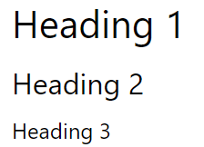
head
This element is a container for metadata (data about data) and is placed between the "html" tag and the "body" tag.
<html>
<head>
...
</head>
</html>
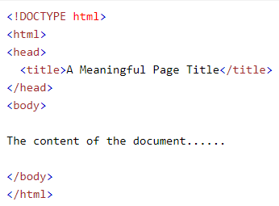
body
This tag defines the document's body.
<body>. . .</body>
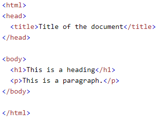
div
This tag defines a division or a section in an HTML document.
<div>
<p>div element</p>
</div>
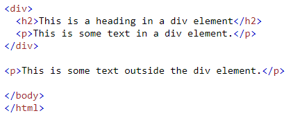
form
This element is used to create an HTML form for used input.
<form1>form elements.1</form1>
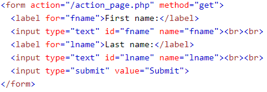
span
This tag is an inline container used to mark up a part of a text, or a part of a document.
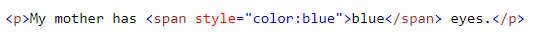
style
The HTML style attribute is used to add styles to an element, such as color, font, size, and more.
<h1 style="color:blue;"></h1>
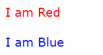
table
This tag defines an HTML table.
<table>
<tr>
<th>1</th>
</tr>
</table>

title
This tag defines the title of the document.
<title>...</title>
input
This tag specifies an input field where the user can enter data.
<input type="text">
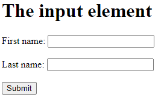
align-content
The align-items property specifies the default alignment for items inside the flexible container.
div {display: flex;
align-items: center;}
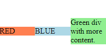
border
The CSS border properties allow you to specify the style, width, and color of an element's border.
h1 {border: 5px solid red;}
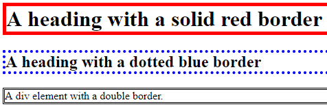
background
The background-image property sets one or more background images for an element.
grad1
{background-color: #cccccc;
background-image: linear-gradient(red, yellow);}
color
The color property specifies the color of text.
h1 {color: #00ff00;}
float
The float property is used for positioning and formatting content e.g. let an image float left to the text in a container.
img {float: right;}
height
The height property sets the height of an element.
child {height: 50%;}
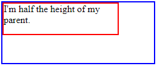
margin
The CSS margin properties are used to create space around elements, outside of any defined borders.
div {margin-top: 50px;}
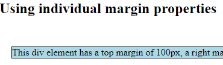
padding
The CSS padding properties are used to generate space around an element's content, inside of any defined borders.
div {padding: 70px;}
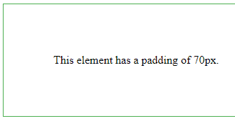
position
The position property specifies the type of positioning method used for an element.
div.relative {position: relative;}
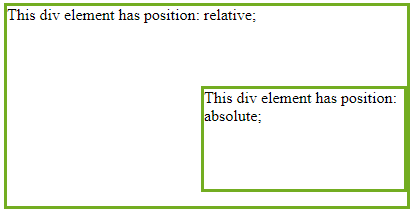
text-align
The text-align property specifies the horizontal alignment of text in an element.
div {text-align: left;}
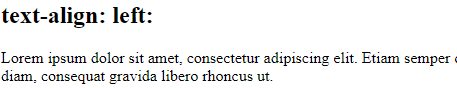
Network Protocols are a set of rules governing exchange of information in an easy, reliable and secure way. Before we discuss the most common protocols used to transmit and receive data over a network, we need to understand how a network is logically organized or designed.
In networking, a protocol is a set of rules for formatting and processing data. Network protocols are like a common language for computers. The computers within a network may use vastly different software and hardware; however, the use of protocols enables them to communicate with each other regardless. Standardized protocols are like a common language that computers can use, similar to how two people from different parts of the world may not understand each other's native languages, but they can communicate using a shared third language. If one computer uses the Internet Protocol (IP) and a second computer does as well, they will be able to communicate — just as the United Nations relies on its 6 official languages to communicate amongst representatives from all over the globe. But if one computer uses IP and the other does not know this protocol, they will be unable to communicate. On the Internet, there are different protocols for different types of processes. Protocols are often discussed in terms of which OSI model layer they belong to.
A Protocol is a set of rules that we use for specific purposes. In the current scenario, when we are talking about protocols, it is about communication- the way we talk to each other. For instance, a newsreader speaks in English and because you understand English, you are able to understand. English is the protocol.
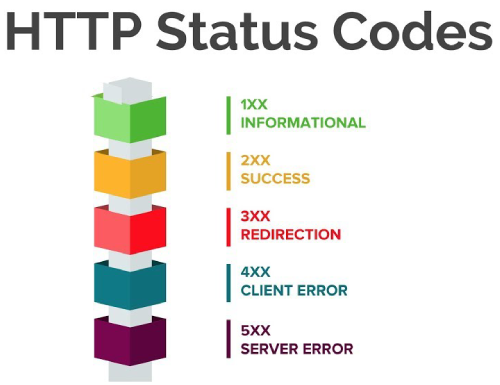
What is HTTP?
HTTP is Hypertext transfer protocol. Simply put - Rules to sending and receiving text-based messages. As we all know, computers work in a language of 1's and 0's i.e. Binary language. Therefore, potentially every set of 1's and 0's construct something, it could be a word.
The Hypertext Transfer Protocol (HTTP) is the foundation of the World Wide Web, and is used to load web pages using hypertext links. HTTP is an application layer protocol designed to transfer information between networked devices and runs on top of other layers of the network protocol stack. A typical flow over HTTP involves a client machine making a request to a server, which then sends a response message.
What’s in an HTTP request?
An HTTP request is the way internet communications platforms such as web browsers ask for the information they need to load a website. Each HTTP request made across the Internet carries with it a series of encoded data that carries different types of information. A typical HTTP request contains:
- HTTP version type
- a URL
- an HTTP method
- HTTP request headers
- Optional HTTP body
Let’s explore in greater depth how these requests work, and how the contents of a request can be used to share information.
What is HTTPS?
Hypertext transfer protocol secure (HTTPS) is the secure version of HTTP, which is the primary protocol used to send data between a web browser and a website. HTTPS is encrypted in order to increase security of data transfer. This is particularly important when users transmit sensitive data, such as by logging into a bank account, email service, or health insurance provider.
Any website, especially those that require login credentials, should use HTTPS. In modern web browsers such as Chrome, websites that do not use HTTPS are marked differently than those that are. Look for a green padlock in the URL bar to signify the webpage is secure. Web browsers take HTTPS seriously; Google Chrome and other browsers flag all non-HTTPS websites as not secure.
What is DNS?
The Domain Name System (DNS) is the phonebook of the Internet. Humans access information online through domain names, like nytimes.com or espn.com. Web browsers interact through Internet Protocol (IP) addresses. DNS translates domain names to IP addresses so browsers can load Internet resources. Each device connected to the Internet has a unique IP address which other machines use to find the device.
How does DNS work?
The process of DNS resolution involves converting a hostname (such as www.example.com) into a computer-friendly IP address (such as 192.168.1.1). An IP address is given to each device on the Internet, and that address is necessary to find the appropriate Internet device - like a street address is used to find a particular home. When a user wants to load a webpage, a translation must occur between what a user types into their web browser (example.com) and the machine-friendly address necessary to locate the example.com webpage. In order to understand the process behind the DNS resolution, it’s important to learn about the different hardware components a DNS query must pass between. For the web browser, the DNS lookup occurs “ behind the scenes” and requires no interaction from the user’s computer apart from the initial request.
DNS record types
The main types of Resource Records:
- MX record defines the domain name mail transmitter, i.e. a node which processes and passes on mail messages intended for an addressee in the indicated domain. When several MX records are available, an attempt is made to deliver the mail to the transmitter with the lowest-numbered priority value first.
- NS record defines DNS servers which are authoritative for the given zone.
- CNAME record defines the display of an alias as a canonical node name.
- SRV record allows to get the name of the service being sought, as well as the protocol under which this service operates.
- TXT record contains general text information. These records may be used for any purpose, e.g. for indication of the host location.
- AAAA record is used to assign a host name conversion to IPV6 address.
- SSHFP record is used to store SSH key fingerprints in DNS.
What Is an IP Address?
Put simply, an IP address (short for Internet Protocol address) is a unique identifier for your machine. Not only do computers have one, but so do tablets and smartphones. And, just like a fingerprint, no two IP addresses are exactly the same. Your external IP address is what you likely think about first when considering that unique string of numbers associated with your internet use. It's also the IP address that your internet service provider assigns to you, and it's all public. Put another way: it's the digital address for your router interface.
How to Find the IP Address of a Website
- Ping Command
- Check your Welcome Email
- Use Lookup Services Like WHOIS